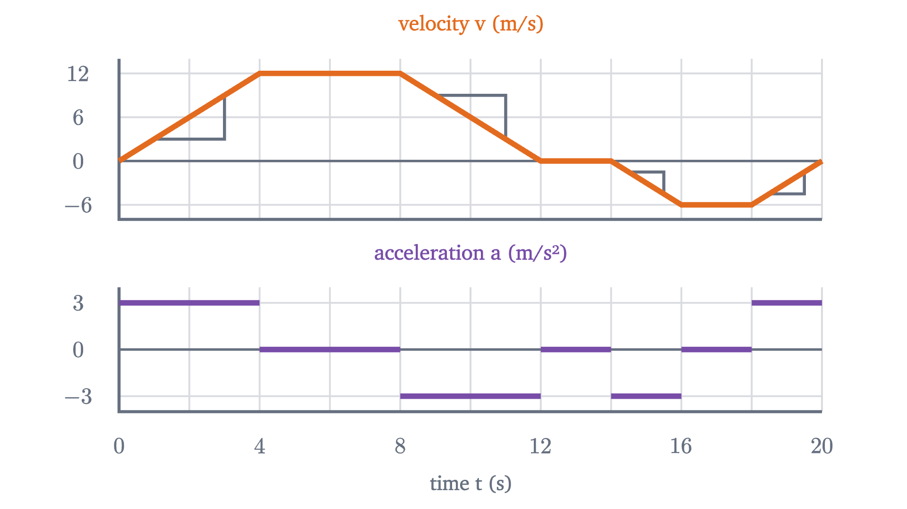
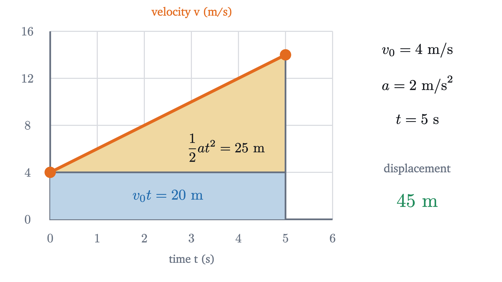

Position, velocity and acceleration: reading motion graphs
Slope turns a position graph into velocity and velocity into acceleration; area goes back. The constant-acceleration equations come from one trapezoid.
The graph above records where a car was during twenty seconds on a straight road. From the graph alone, try to say when the car was moving fastest, when it was standing still, and when it was going backward.
The tempting answer to the first question is “at the top”, because that is where the graph is highest. But the height of this graph is the car’s position, and between 12 and 14 seconds, where the graph is highest, the car is parked 96 meters down the road. The road is flat the whole way; the hill exists only in the graph.
Pause and try
Watch the animation again and commit to answers. During which stretch of time is the car fastest? When is it stopped? When is it reversing? For each, say what feature of the graph told you.
Show answerHide answer
It is fastest from 4 s to 8 s, where the graph climbs most steeply. It is stopped from 12 s to 14 s, where the graph is flat. It reverses from 14 s to 20 s, where the graph falls. In every case the information is in how steep the graph is and which way it tilts, and none of it is in how high the graph is.
Position needs an origin and a direction
To graph a motion we first have to turn “where the car is” into a number. Pick one point on the road and call it the origin. Pick one of the two directions along the road and call it positive. Every number that follows depends on these two choices, so a careful solution states them at the start. Here the origin is the place where the car starts, and the positive direction is the way it first drives.
The symbol $\Delta$ is read “change in”. For our car, $x(0) = 0$ m, $x(12) = 96$ m and $x(20) = 72$ m. Its displacement over the whole trip is $72 - 0 = +72$ m, but the distance it traveled is $96 + 24 = 120$ m, because it drove 96 m forward and then 24 m back.
Velocity is the slope of the position graph
Start where the motion is simplest. From 4 s to 8 s the graph is a straight line from 24 m up to 72 m, so the car covers 48 m in 4 s:
On the graph this is rise over run, the slope of the line, and it comes with units: meters on the vertical axis divided by seconds on the horizontal axis.
Now try the same recipe on the first four seconds. The car goes from 0 m to 24 m, an average of 6 m/s. That number is correct and unsatisfying, because the graph is curved there: the car began at rest and was doing 12 m/s by the end. What we want is the velocity at one moment, say at $t = 3$ s. An average needs an interval, so we use intervals that start at 3 s and get shorter.
Over the intervals from 3 s to 4 s, to 3.5 s and to 3.1 s the average velocities are 10.5, 9.75 and 9.15 m/s. They are heading for 9, and we can see why. During the first four seconds this car’s position is $x = 1.5t^2$ meters (we will derive that formula below), so from $t = 3$ to $t = 3 + h$ the average velocity is
The leftover $1.5h$ can be made as small as we like by shortening the interval, and the only number the averages approach is 9. That number is what we mean by the velocity at $t = 3$ s.
Velocity carries a sign, and the sign means direction. A positive slope says the car moves in the positive direction, a negative slope says it moves the other way, and zero slope says it is at rest. That settles the opening questions: steepest climb from 4 s to 8 s ($v = 12$ m/s), flat from 12 s to 14 s ($v = 0$), falling from 14 s to 20 s ($v < 0$, with $v = -6$ m/s on the straight part).
If we read the slope at every moment and plot it, we get a second graph. Then we can do the same thing to that graph and get a third.
Acceleration is the slope of the velocity graph
The velocity graph of this trip is made of straight pieces, which is what makes it a good first example. Look at the first one. In 4 s the velocity rises from 0 to 12 m/s, so the car gains 3 m/s of velocity every second. A rate of “meters per second, per second” is written m/s².
Reading the slope of each straight piece gives the whole trip in one table.
| Time (s) | Velocity (m/s) | Acceleration (m/s²) | What the car is doing |
|---|---|---|---|
| 0 to 4 | 0 up to 12 | $+3$ | speeding up, forward |
| 4 to 8 | 12 | 0 | cruising forward |
| 8 to 12 | 12 down to 0 | $-3$ | slowing down, forward |
| 12 to 14 | 0 | 0 | parked |
| 14 to 16 | 0 down to $-6$ | $-3$ | speeding up, backward |
| 16 to 18 | $-6$ | 0 | cruising backward |
| 18 to 20 | $-6$ up to 0 | $+3$ | slowing down, backward |

Two rows of the table deserve a second look. From 14 s to 16 s the acceleration is negative and the car is speeding up. From 18 s to 20 s the acceleration is positive and the car is slowing down. Acceleration says which way the velocity is changing, and whether that makes the car faster or slower depends on which way it is already going. The rule that covers all seven rows is this: an object speeds up when $v$ and $a$ have the same sign, and slows down when they have opposite signs.
Going back: area under the velocity graph
Slopes took us from position to velocity. Suppose now that only the velocity graph survived, and we want to recover how far the car went.
Where the velocity is constant this is easy. From 4 s to 8 s the car does 12 m/s for 4 s, so $\Delta x = v\,\Delta t = 12 \times 4 = 48$ m. On the velocity graph, 12 is the height of a rectangle and 4 is its width, so the displacement is the rectangle’s area. The units agree: (m/s) × s = m.
During the first four seconds the velocity is changing, and there is no single height to multiply by. So we cut the time into short strips and treat the velocity as constant within each one. We can do this honestly in two ways. If the car’s velocity stays between 3 m/s and 6 m/s during some second, it travels at least 3 m and at most 6 m in that second. Using the lowest velocity in every strip gives a total that is too small, and using the highest gives one that is too large.
Pause and try
Cut the first 4 s into four strips of 1 s. The velocity is $v = 3t$, so it is 0, 3, 6, 9 and 12 m/s at $t = 0, 1, 2, 3, 4$. Find the too-small total and the too-large total. Then guess the exact displacement.
Show answerHide answer
Too small: $(0 + 3 + 6 + 9) \times 1 = 18$ m. Too large: $(3 + 6 + 9 + 12) \times 1 = 30$ m. The truth is somewhere between, and the midpoint, 24 m, is the natural guess. The figure tests it.
With $n$ strips the two totals work out to $24 - 24/n$ and $24 + 24/n$ meters. The true displacement lies between them for every $n$, and so does the area of the triangle under the line, since the blue staircase fits inside the triangle and the capped one covers it. Two numbers that are both trapped in an interval of width $48/n$, for every $n$, cannot differ. So the displacement in the first four seconds equals the triangle’s area exactly: $\tfrac{1}{2} \times 4 \text{ s} \times 12 \text{ m/s} = 24$ m, which is where the graph put the car at $t = 4$ s.
To be clear about the status of that argument: for a velocity graph that is a straight line, we have proved that displacement equals area, given one physical fact: over any interval, the displacement is at least the lowest velocity times the duration and at most the highest velocity times the duration. For a curved velocity graph the same trapping works, but showing that the two totals always close in on a single number takes more care; that is the subject of integrals and the fundamental theorem of calculus.
One more point before we use it. From 14 s to 20 s the velocity is negative, and $v\,\Delta t$ is negative for every strip, so the region between the graph and the time axis counts as negative there. Displacement is a signed area: regions above the axis add and regions below it subtract.
Notice what area cannot tell you: it gives the change in position, so to know where the car is you need its starting position as well. The same argument one level up shows that the signed area under an acceleration graph is the change in velocity.
Constant acceleration: four equations from one trapezoid
Many motions have a stretch of constant acceleration: a car braking steadily, a ball in the air. For those the velocity graph is one straight line, the area under it is a trapezoid, and everything can be written as a formula.
Pause and try
A car moving at 4 m/s accelerates at 2 m/s² for 5 s. Sketch its velocity graph and find its displacement from the area, by splitting the region under the line into a rectangle and a triangle.
Show answerHide answer
The velocity climbs from 4 m/s to $4 + 2 \times 5 = 14$ m/s. The rectangle is 4 m/s tall and 5 s wide: 20 m. The triangle on top is 5 s wide and $14 - 4 = 10$ m/s tall: $\tfrac12 \times 5 \times 10 = 25$ m. Displacement: 45 m.

Replace the numbers with letters and the same picture gives the general result.
Check the units of (2): $v_0 t$ is (m/s)(s) = m and $\tfrac12 at^2$ is (m/s²)(s²) = m, so every term is a length. In (4) every term is in m²/s². A formula whose terms have different units is wrong.
Each equation leaves out one of the quantities $x - x_0$, $v$, $a$, $t$, and that tells you which to reach for: (4) has no $t$ in it, so it answers “how far” questions when nobody has told you how long.
The first four seconds of our car are the case $x_0 = 0$, $v_0 = 0$, $a = 3$ m/s², where (2) gives $x = 1.5t^2$, the formula we borrowed earlier. Another case is worth recognizing. An object falling freely near the Earth’s surface, with air resistance neglected, has a constant downward acceleration of magnitude $g \approx 9.8$ m/s². Dropped from rest, it falls $\tfrac12 g t^2 = 4.9t^2$ meters in $t$ seconds, which rounds to the $5t^2$ used for the falling ball in the calculus lesson linked above.
Worked examples
At the top of the flight the velocity is zero and the acceleration is still $-9.8$ m/s². If both were zero the ball would stay there.
Where the equations stop working
The four equations were proved for one stretch of constant acceleration, and they fail the moment that hypothesis does. Apply (2) blindly to the car’s whole trip with the first phase’s numbers, $x = \tfrac12 (3)(20)^2$, and you get 600 m; the car is actually at 72 m. For a motion with several phases, use the equations one phase at a time, feeding the final position and velocity of each phase into the next as its $x_0$ and $v_0$, or go back to slopes and areas, which do not need the acceleration to be constant.
Free fall is the other place to be careful. Air resistance grows with speed, so a real falling object’s acceleration shrinks as it speeds up. For a ball thrown across a room the effect is too small to notice. For a skydiver it dominates: the model $v = 9.8t$ predicts 98 m/s after ten seconds, while a real skydiver in a spread position levels off near 55 m/s.
Finally, our car’s acceleration jumps from $+3$ to 0 at $t = 4$ s. The velocity graph has a corner there, so its slope, and with it the acceleration, has no single value at that instant. Real cars change acceleration over a few tenths of a second, which rounds the corners and changes the distances very little.
Check yourself
A ball thrown straight up is at the highest point of its flight. Taking up as positive and neglecting air resistance, what are its velocity and acceleration at that instant?
The next lesson, on Newton’s second law, asks what sets the acceleration in the first place, and the answer is force.
Problems
Use $g = 9.8$ m/s² and neglect air resistance unless told otherwise. State your origin and positive direction in every solution.
Problem 1
Using the car of this lesson, find its average velocity from $t = 2$ s to $t = 10$ s. (You will need $x(2)$ and $x(10)$; get them from the constant-acceleration equations.)
Show solutionHide solution
During the first phase $x = 1.5t^2$, so $x(2) = 6$ m. The third phase starts at $t = 8$ s with $x_0 = 72$ m, $v_0 = 12$ m/s and $a = -3$ m/s²; two seconds into it, $x = 72 + 12(2) + \tfrac12(-3)(2)^2 = 90$ m. So $v_{\text{avg}} = \dfrac{90 - 6}{10 - 2} = 10.5$ m/s. As a check, the area under the velocity graph from 2 s to 10 s is two trapezoids of $\tfrac12(6 + 12)(2) = 18$ m each and a rectangle of 48 m: 84 m in total.
Problem 2
A cyclist riding at 4 m/s accelerates uniformly to 10 m/s over 3 s and then holds that velocity for 5 s. Find her acceleration during the first 3 s and her total displacement over the 8 s.
Show solutionHide solution
Take her direction of travel as positive. Acceleration: $a = (10 - 4)/3 = 2$ m/s². The area under the velocity graph is a trapezoid followed by a rectangle. Trapezoid: $\tfrac12(4 + 10)(3) = 21$ m. Rectangle: $10 \times 5 = 50$ m. Total displacement: 71 m.
Problem 3
At what times is the lesson’s car exactly 84 m from its starting point?
Show solutionHide solution
The position rises to 96 m and comes back to 72 m, so it passes 84 m twice. On the way out: at $t = 8$ s the car is at 72 m, so 84 m is reached during the braking phase, where $x = 72 + 12u - 1.5u^2$ with $u = t - 8$. Setting this equal to 84 gives $1.5u^2 - 12u + 12 = 0$, that is, $u^2 - 8u + 8 = 0$, so $u = 4 \pm 2\sqrt2$. Only $u = 4 - 2\sqrt2 \approx 1.17$ lies within the phase ($0 \le u \le 4$), so $t \approx 9.17$ s. On the way back: at $t = 16$ s the car is at $96 - 6 = 90$ m and then moves at $-6$ m/s, so it reaches 84 m one second later, at $t = 17$ s.
Problem 4
A driver traveling at 30 m/s sees an obstacle 80 m ahead. Her reaction time is 0.8 s, during which the car keeps its velocity, and then she brakes at a constant 7.5 m/s². (a) What total distance would the car need to stop? (b) How fast is it moving when it reaches the obstacle?
Show solutionHide solution
Positive in the direction of travel, origin where she first sees the obstacle. (a) During the reaction time the car covers $30 \times 0.8 = 24$ m. Braking from 30 m/s to rest: $0 = 30^2 + 2(-7.5)\Delta x$, so $\Delta x = 900/15 = 60$ m. Total: 84 m, which is 4 m more than she has. (b) Braking begins at $x = 24$ m, leaving $80 - 24 = 56$ m. Then $v^2 = 30^2 + 2(-7.5)(56) = 900 - 840 = 60$, so $v \approx 7.7$ m/s. The last 4 m of the stopping distance would have removed the final 7.7 m/s.
Problem 5
For each statement, say whether it is true or false, and give an example from this lesson that supports your answer. (a) If an object’s velocity is zero at some instant, its acceleration is zero at that instant. (b) If an object’s acceleration is zero over an interval, it is at rest. (c) If an object’s acceleration is positive, its speed is increasing.
Show solutionHide solution
(a) False. The thrown ball at the top of its flight has $v = 0$ and $a = -9.8$ m/s². (b) False. From 4 s to 8 s the car has $a = 0$ and moves steadily at 12 m/s; zero acceleration means constant velocity, and rest is only the special case $v = 0$. (c) False. From 18 s to 20 s the car has $a = +3$ m/s² and $v < 0$, and its speed drops from 6 m/s to 0. Speed increases only when $a$ and $v$ have the same sign.
Problem 6
A speeding car passes a parked police car at a constant 24 m/s. At that instant the police car starts from rest with constant acceleration 3 m/s². (a) When and where does the police car draw level? (b) How fast is it going then? (c) Explain the answer to (b) using the two velocity graphs, without equations.
Show solutionHide solution
Origin at the parked police car, positive along the road, $t = 0$ when the speeder passes. (a) Speeder: $x = 24t$. Police: $x = \tfrac12(3)t^2 = 1.5t^2$. They are level when $1.5t^2 = 24t$, so $t = 0$ (the start) or $t = 16$ s, at $x = 24 \times 16 = 384$ m. (b) $v = 3 \times 16 = 48$ m/s, exactly twice the speeder’s velocity. (c) Both cars have the same displacement at the moment they are level, so the areas under their velocity graphs from 0 to that time are equal. The speeder’s is a rectangle of height 24; the police car’s is a triangle on the same base. A triangle has half the area of a rectangle with the same base and height, so to match the rectangle the triangle must be twice as tall: 48 m/s.
Problem 7
Galileo found that a ball starting from rest with constant acceleration covers distances in successive equal time intervals in the ratio $1 : 3 : 5 : 7 : \dots$ Prove it. Then explain it from the velocity graph.
Show solutionHide solution
Let the intervals have length $\tau$ and the acceleration be $a$, with $x_0 = 0$ and $v_0 = 0$. At the end of the $n$th interval $t = n\tau$ and $x = \tfrac12 a n^2\tau^2$. The distance covered during the $n$th interval is therefore
For $n = 1, 2, 3, 4$ the factor $2n - 1$ is $1, 3, 5, 7$. On the velocity graph, a line through the origin, cut the region under the line at $t = \tau, 2\tau, 3\tau, \dots$ The first piece is a triangle of area $\tfrac12 a\tau^2$. Each later piece is a trapezoid that can be tiled by copies of that triangle: the $n$th strip is a rectangle of height $(n-1)a\tau$, which is $2(n-1)$ triangles, with one more triangle on top, making $2n - 1$.
Problem 8
(a) Prove that for motion with constant acceleration, the average velocity over any time interval equals the instantaneous velocity at the middle instant of that interval. (b) Show with the lesson’s car that this can fail when the acceleration is not constant over the interval.
Show solutionHide solution
(a) Let the interval run from $t_1$ to $t_2$ with velocities $v_1$ and $v_2$ at its ends. Equation (3), applied with the clock started at $t_1$, gives $\Delta x = \tfrac12(v_1 + v_2)(t_2 - t_1)$, so $v_{\text{avg}} = \tfrac12(v_1 + v_2)$. The velocity at the middle instant $t_m = \tfrac12(t_1 + t_2)$ is, by equation (1), $v_1 + a\,(t_m - t_1) = v_1 + \tfrac12 a(t_2 - t_1) = v_1 + \tfrac12(v_2 - v_1) = \tfrac12(v_1 + v_2)$. (b) Take the interval from 0 s to 8 s. The average velocity is $72/8 = 9$ m/s. The middle instant is $t = 4$ s, when the velocity is 12 m/s. They differ because the acceleration changed from 3 m/s² to 0 at $t = 4$ s, so the velocity graph over this interval is not a single straight line.